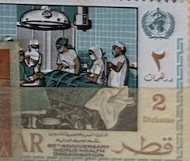
| SOURCE | TITLE| IMAGE MATCH | click to source page |
| lastdodo.com | Avicenna [ca.980-1037] (Ibn-Sina) Stamp catalogue - LastDodo | 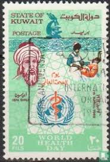 |
| eBay | F837 Qatar 1968 W.H.O. hospital 2d. High value 1v. MNH | eBay | 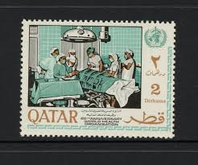 |
| eBay | Yemen Kingdom Doctors and Nurses in Desert set 1962 | eBay | 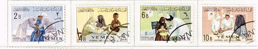 |
| Teguh Wira Adikusuma | My Collections – Teguh Wira Adikusuma | 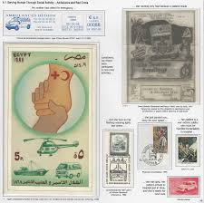 |
| Free stamp catalogue | Stamps from Iraq - Freestampcatalogue.com - The free online stampcatalogue with over 500.000 stamps listed. | 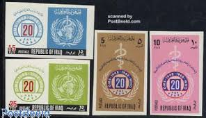 |
| Workplace Translation | Leeds | 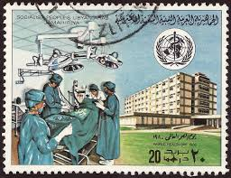 | |
| WordPress.com | 1968-Qatar-WHO-1 « WORLD OF STAMPS | 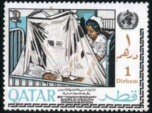 |
| Colnect | Stamp: 20th Anniversary - Healthcare (Qatar(W.H.O. (World Health Organization), 20th Anniversary) Mi:QA 355,Sn:QA 134,Yt:QA 150,Sg:QA 258 📮 | 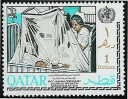 |
| BalkanPhila | 1989 UAE Red Crescent NHM Set – BalkanPhila | 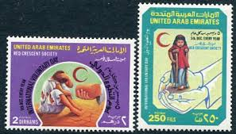 |
| eBay | Afghan Miniature Sheet Topical Postal Stamps for sale | eBay | 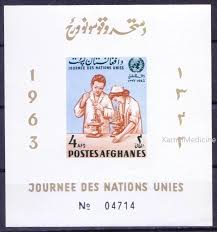 |
| Lington & Bernie Consulting Limited | Afghanistan 1964 UN Medical Human Right Nurses Microscope Oxen Cattle Imperf MNH - Lington & Bernie Consulting | 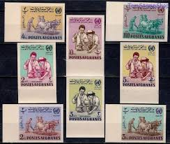 |
| Rataq (rataq_2000) - Profile | Pinterest | 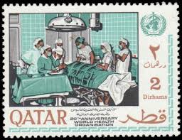 | |
| Colnect | Stamp: Nurses, mother and child (Yemen, Kingdom (Before 1963)(Maternity and Child Centre) Mi:YE-AR 237A,Sn:YE-AR 131,Yt:YE-K 121,Sg:YE-AR 163 📮 | 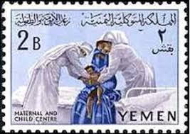 |
| eBay | Afghanistan Sc 672-672G MNH. 1964 UN Day, complete matched imperf set, XF | eBay | 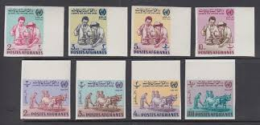 |
| BalkanPhila | 1959 Syria Damascus Fair B9+9 Blocks – BalkanPhila | 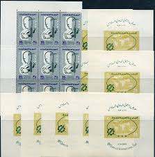 |
| The University of Alabama | Middle East: Anti-Smoking Postage Stamps – The Center for the Study of Tobacco and Society | 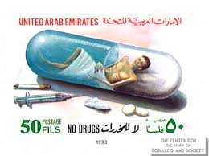 |
| Samaneh Arabian (Samaneh16) - Profile | Pinterest | 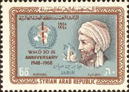 | |
| eBay | First Day of Issue First Day Cover Jordan Stamps for sale | eBay | 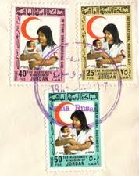 |
| Colnect | Stamp: Nurse, young patient (Iran(Birthday of Hazrat Zeinab, Nurses Day) Mi:IR 2194,Sn:IR 2252,Yt:IR 1998,Sg:IR 2368,Far:IR 2211 📮 | 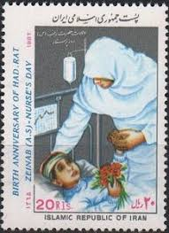 |
| Freestampcatalogue.com | Stamps from Kuwait - Freestampcatalogue.com - The free online stampcatalogue with over 500.000 stamps listed. | 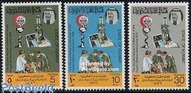 |
| Free stamp catalogue | Stamps from Sudan - Freestampcatalogue.com - The free online stampcatalogue with over 500.000 stamps listed. | 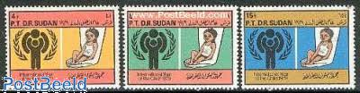 |
| Maps on Stamps | Maps on Stamps : Yemen | A Database of Cartophilately | 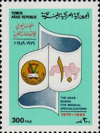 |
| United Arab - Anti-Tuberculosis stamp - World Health Day. | 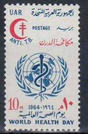 | |
| Wikimedia.org | File:Stamp of United Arab Emirates - 1974 - Colnect 717165 - Health service.jpeg - Wikimedia Commons | 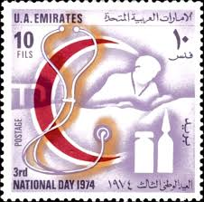 |
| eBay | Red Cross Afghan Stamps for sale | eBay | 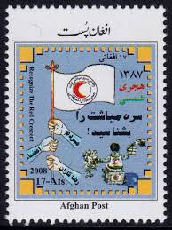 |
| eBay | Medical Mint Hinged Egyptian Stamps for sale | eBay | 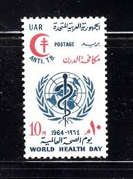 |
| It's Nice That | Stamps of a Revolution: Ali Mobasser's Iranian stamp collection and incredible family story | 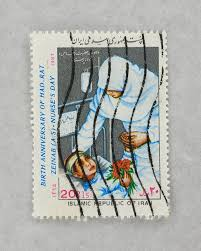 |
| Stamp Community Forum | Refugees On Stamps - Page 14 - Stamp Community Forum | 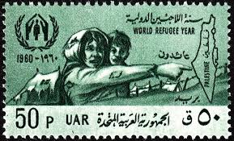 |
| eBay | Libya - 1979 World Health Day - MNH | eBay | 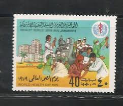 |
| Free stamp catalogue | Stamps from Yemen, Arab Republic - Freestampcatalogue.com - The free online stampcatalogue with over 500.000 stamps listed. | 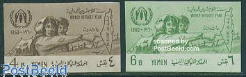 |
| HipStamp | Search "Scott 2252" in Middle East / HipStamp | 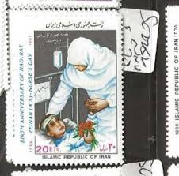 |
| PostBeeld | Stamp 1964, Afghanistan UNO day 8v imperforated, 1964 - Collecting Stamps - PostBeeld - Online Stamp Shop - Collecting | 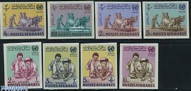 |
| eBay | Multi-Color Medical Middle Eastern Stamps for sale | eBay | 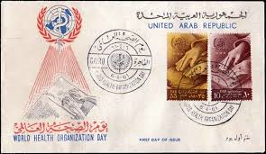 |
| X | Aid to refugees" a 1968 Syrian Red Crescent Stamp in aid of Palestinian Refugees after the Six Days War in 1967. | 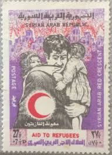 |
| eBay | 1964 DUBAI Mi.118 A **/MNH Anti-Tuberculosis, DOUBLE OVERPRINT [sz0204] | eBay | 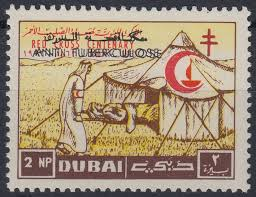 |
| eBay | Afghanistan 1964 UN Medical Human Rights Doctor Nurse Health Microscope MNH/2 | eBay | 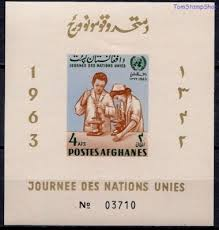 |
| eBay | Dubai 1963 ** Mi.31 C Rotes Kreuz Sanitäter Zelt | eBay | 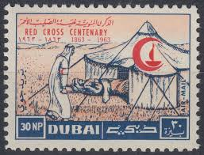 |
| eBay | Iraq Organizations Postal Stamps for sale | eBay | 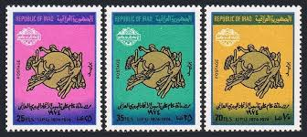 |
| Dreamstime.com | 1960 S Kuwait Stamp editorial photo. Image of correspondence - 4022336 | 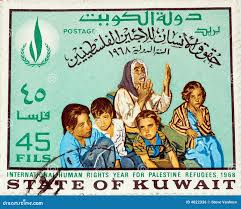 |
| eBay | Oman airmail cover to Hollsnd 1972 | eBay | 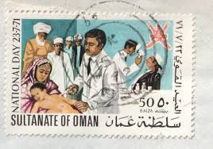 |
| BalkanAuction | Collectibles | BalkanAuction | 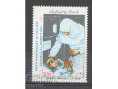 |
| eBay | First Day of Issue Red Cross Stamps for sale | eBay | 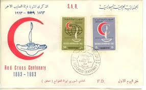 |
| Free stamp catalogue | Stamps from Libya Kingdom - Freestampcatalogue.com - The free online stampcatalogue with over 500.000 stamps listed. | 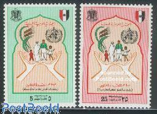 |
| Amazon.com | Amazon.com: Egypt 699-700 (Complete.Issue.) unmounted Mint/Never hinged ** MNH 1963 Federation (Stamps for Collectors) : Toys & Games | 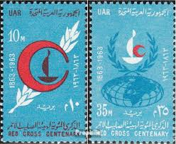 |
| Empirephilatelists.com | Iraq 1988 W.H.O 40th Anniv Set of 4 SG1808-1811 V.F MNH | Empire Philatelists Stamp Dealers | 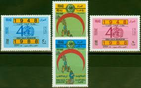 |
| eBay | Libya 1993 WHO World Health Day Medical Hospital Doctor Nurse Nursing 2v MNH | eBay | 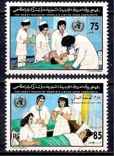 |
| eBay | Egypt 1964 WHO World Health Day Red Croix TB Tuberculosis Medical Health Bl4 MNH | eBay | 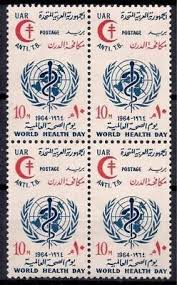 |
| SoundCloud | Stream سرود رستاخیز by Sina Tehranchi | Listen online for free on SoundCloud | 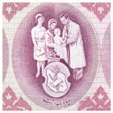 |
| Freestampcatalogue.com | Stamps from Libya Kingdom - Freestampcatalogue.com - The free online stampcatalogue with over 500.000 stamps listed. | 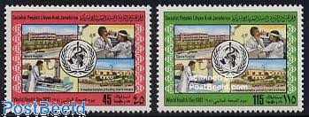 |
| eBay | Superb Tunisian Stamps for sale | eBay | |
| Brown University | StampEx050md.jpg | |
| Stamp and Cover Galaxy | SCG1202 - Yemen Arab Republic – Tribute to Cardiac Surgery – Stamp and Cover Galaxy | |
| eBay | Lebanon 1963 Sc# C376-C379 MNH Centenary Of International Red Cross (B234) | eBay | |
| Maps on Stamps | Maps on Stamps : Bahrain | A Database of Cartophilately | |
| owlsandbooks.co.uk | BOOK STAMPS LIBYA | |
| eBay | Cultures, Ethnicities Iraqi Stamps for sale | eBay | |
| Maps on Stamps | Maps on Stamps : Bahrain | A Database of Cartophilately | |
| commonwealthstamps.com | Sudan 1963 Red Cross SG 229 Fine Used | |
| Flickr | A-005-002 | Hany Aburaya | Flickr | |
| 123RF | Republic Of Iraq Stamp Postage 75 Fils, Shows Golden Statue Stock Photo, Picture and Royalty Free Image. Image 23049619. |
{kind=link}